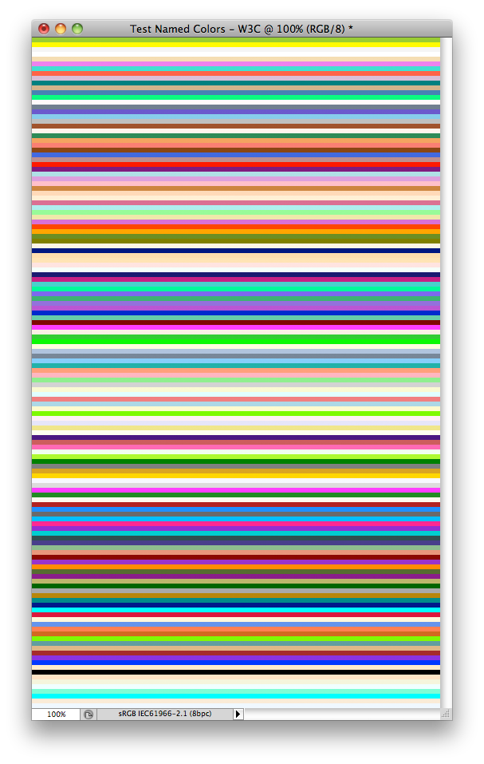

This script is part of the set of Test Scripts coming with the JSON Action Manager scripting library.
It shows how to display the entire default set of named colors:

Back to JSON Action Manager Test Scripts